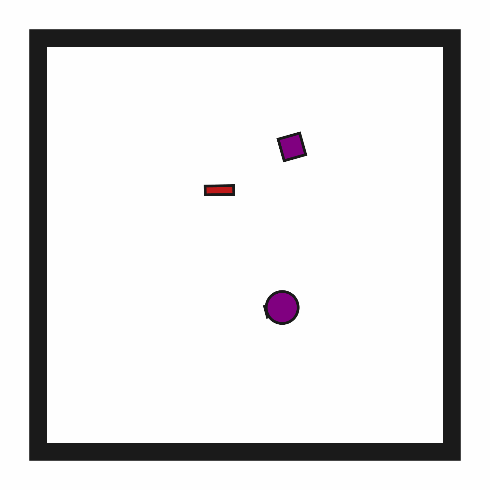
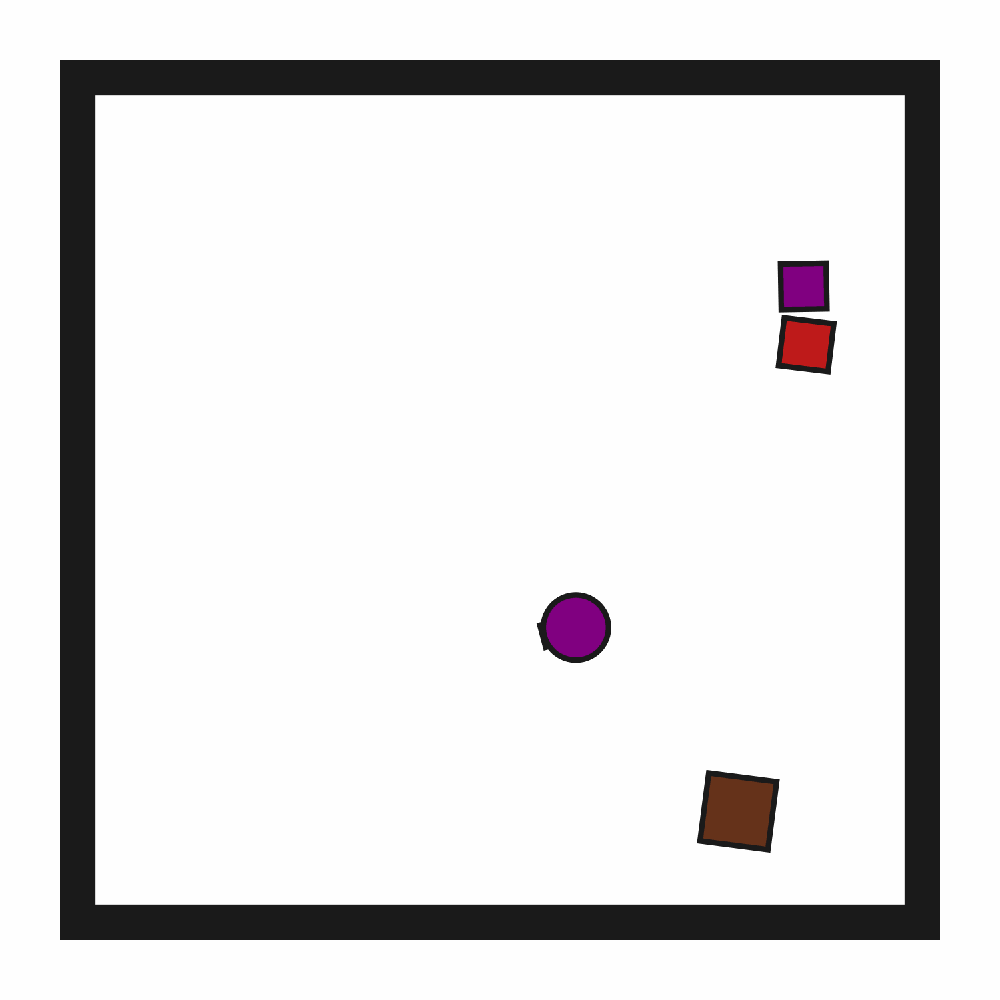

ClutteredRetrieval2D
Random Action
Initial State Distribution
Example Demonstration
Description
A 2D environment where the goal is to "pick up" (suction) a target block. The target block may be initially obstructed. The robot has a movable circular base and a retractable arm with a rectangular vacuum end effector. Objects can be grasped and ungrasped when the end effector makes contact.
Variants
This environment has 3 standard variant(s). Each variant has a constant number of objects. See the variant pages for detailed descriptions of observation spaces, action spaces, and rewards.
References
Similar environments have been considered by many others, especially in the task and motion planning literature, e.g., "Combined Task and Motion Planning Through an Extensible Planner-Independent Interface Layer" (Srivastava et al., ICRA 2014).